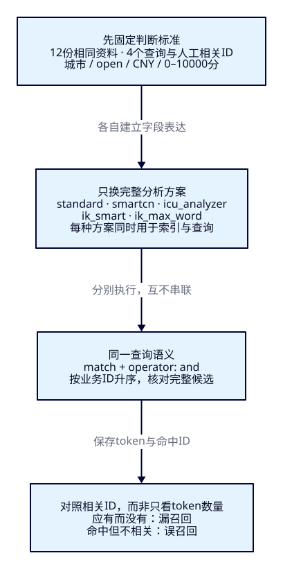
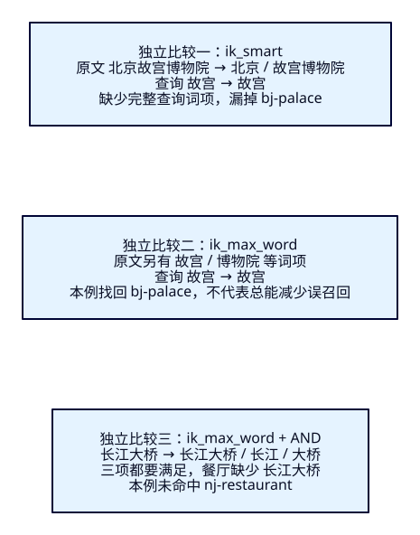

不同中文分词器切出来的词，
真的适合旅游吗？
F13 已能用 token 解释搜不到与搜错。现在把同一批旅游资料交给五种分析方式：切成完整词，可能排除“故城宫苑”，也可能让“故宫”找不到“故宫博物院”。本课建立可重复的比较，学习按实际需求选择方案。
学完能证明什么
- 核对9.4.0插件制品、哈希、节点实际加载；把不可用与0命中分开。
- 在同语料、同查询与硬条件下比较五种方案，逐份解释漏召回和误召回。
- 用REST与Java重现相同token/ID/次序/价格，点名清理后再做一轮，说明结论范围。
1. 游客想找实体，ES先比较词项
游客输入“故宫”，希望找到北京故宫与东门。standard把它切成“故”和“宫”，AND允许分离的字同时出现，于是“故城宫苑”也被召回。运营想换中文插件，让名称里的词更接近日常理解。这个方向值得试，但必须接着问：完整长词会不会遮住游客常用的简称？
ES仍负责检索候选，不替人决定“长江路”是不是“长江”。本课的相关判断是提前写下：在一个明确的查询意图下，哪些业务ID应该出现。漏召回是相关ID没有进入；误召回是不相关ID进入。分词方案只影响其中一部分，城市、状态、预算仍由已学的过滤条件决定。
2. 比较完整分析方式，而不只比较切词数量
沿用F13的分析链：字符可以先归一，tokenizer切分，再由filter处理词项。人们口头说的“分词器”常把整套analyzer也包括进去。本课比较的是现成analyzer及其随包规则/词典，包括大小写、全角等处理；结果差异不能全归因于tokenizer。它们没有被配置成完全相同的字符过滤或词项过滤链。
| 方案 | 本课实际analyzer | 先知道的职责与限制 |
|---|---|---|
| 内置基线 | standard | 无需插件；本例中文按单字，英文小写；单字不代表实体语义 |
| SmartCN | smartcn | Elastic插件，面向简体及中英混合，按统计知识切词；本课不改内置词典 |
| ICU | icu_analyzer | Elastic插件，包含Unicode归一、ICU切分与folding；不是只给standard换个中文词库 |
| IK粗粒度 | ik_smart | 维护方插件，倾向较长词项；简称未必作为独立词项保留 |
| IK细粒度 | ik_max_word | 可能输出相互覆盖的词项；更多词项不保证查询更宽或更准 |
每个候选在本课都索引与查询使用同一analyzer。这是便于解释的受控选择；常见的“索引用max、查询用smart”是另一种配置，不在本轮矩阵内。SmartCN官方说明、ICU官方说明、IK维护方说明可用于定位候选，9.4.0行为仍以制品与实测为准。

3. 十二份资料，四个明确意图
独立节点端口19214、索引tut-f14-attractions，ES9.4.0/Lucene10.4.0、一主零副本、strict、refresh_interval=-1。金额为整数分。所有请求都限定所选城市、open、CNY、0–10000分（含端点），match使用AND，结果按keyword业务ID升序。本课不比较分数高低。
| ID | name | 城市 / 状态 / 分 |
|---|---|---|
| bj-palace | 北京故宫博物院 | BJ / open / 6000 |
| bj-east | 故宫东门 | BJ / open / 6000 |
| bj-separated | 故城宫苑 | BJ / open / 3000 |
| bj-punctuation | 故，宫主题展 | BJ / open / 1000 |
| bj-cafe | Ｃａｆｅ 城市咖啡馆 | BJ / open / 3000 |
| sy-palace | 沈阳故宫博物院 | SY / open / 5000 |
| nj-bridge | 南京市长江大桥 | NJ / open / 0 |
| nj-scattered | 长廊江景酒店 | NJ / open / 8000 |
| nj-restaurant | 长江路大桥餐厅 | NJ / open / 5000 |
| nj-hotel | 长江江景酒店 | NJ / open / 9000 |
| nj-closed | 南京市长江大桥夜游 | NJ / closed / 5000 |
| nj-expensive | 长江游船 | NJ / open / 15000 |
人工判断文件先于比较固定：北京“故宫”应有bj-east/bj-palace；南京“长江”指河流，应有nj-bridge/nj-hotel，“长江路”餐厅只指道路；南京“长江大桥”只应有nj-bridge；北京ASCII“CAFE”应找到全角名称的bj-cafe。这是教学意图，不是对所有用户的通用标注。
沈阳故宫不进入北京结果；closed夜游与15000分游船分别被状态与预算挡住。样本混合景点、酒店与餐厅，只比较名称检索，不实现酒店房型。新增或遗漏候选必须对照同一份判断，不能看完结果再改“应该找到”的名单。
4. f14-c01：没有插件也能建立基线
先在独立F14节点运行，保留前课19200与源码篇9200/9201。需要Docker/Compose、Bash、curl、Python3.10+；启动与重做完整入口在实验说明。首次索引应不存在；若已存在先停下，按第11节点名清理。
cd projects/travel-search
export ES_URL=http://127.0.0.1:19214
docker compose -f infra/f14/compose.yaml up -d es
bash infra/f14/wait.sh
bash labs/f14/01-prepare-baseline.sh
bash labs/f14/02-baseline.sh准备六请求核对版本、创建确认、green且未超时、Bulk十二项全created/errors=false、显式refresh零失败、count=12。随后读取插件清单、mapping/settings，分析四个查询并搜索。基线只有standard字段：
{
"settings": {
"number_of_shards": 1,
"number_of_replicas": 0,
"refresh_interval": "-1"
},
"mappings": {
"dynamic": "strict",
"properties": {
"attraction_id": {
"type": "keyword"
},
"name": {
"type": "text",
"analyzer": "standard",
"search_analyzer": "standard"
},
"city_code": {
"type": "keyword"
},
"status": {
"type": "keyword"
},
"currency": {
"type": "keyword"
},
"ticket_price_fen": {
"type": "integer"
}
}
}
}实际“故宫”命中4份，含两份误召回；“长江”4份，含餐厅与长廊酒店两份误召回；“长江大桥”2份，餐厅误入；CAFE为0，漏掉全角咖啡馆。此时请求smartcn/icu_analyzer/ik_smart分析会得到400：分析器未安装。不可执行不能填写为0命中。插件下载失败时继续用这些基线证据，其他列明确记为未比较。
5. f14-c02：制品匹配，再谈效果
本轮检查日期为2026-10-24。SmartCN与ICU从Elastic下载9.4.0包，核对官方SHA512；IK从维护方链接取得9.4.0包，记录本地SHA512并锁定。IK指纹不是独立发布的签名或校验值。三个descriptor均声明elasticsearch.version=9.4.0，随后在真实节点加载并运行；只看文件名不够。
{
"es_version": "9.4.0",
"checked_at": "2026-10-24",
"plugins": [
{
"name": "analysis-smartcn",
"url": "https://artifacts.elastic.co/downloads/elasticsearch-plugins/analysis-smartcn/analysis-smartcn-9.4.0.zip",
"sha512": "e07123e6bc5a8bb6927646533e051f7cce4f091a7135ae47acbd3e5154aedefb82897e4041aace07a4f7ac5bf9d81a0351e638f8c2af35e46a9574100378578b",
"hash_source": "https://artifacts.elastic.co/downloads/elasticsearch-plugins/analysis-smartcn/analysis-smartcn-9.4.0.zip.sha512"
},
{
"name": "analysis-icu",
"url": "https://artifacts.elastic.co/downloads/elasticsearch-plugins/analysis-icu/analysis-icu-9.4.0.zip",
"sha512": "8b42469359bd00e41f9d1cf66c33ce903aedd0670c7f683a606757ab227be9f55c5175087afeb21565d00ce2c9665d0db0bb80334d2deb003b21eecbcfb6c98b",
"hash_source": "https://artifacts.elastic.co/downloads/elasticsearch-plugins/analysis-icu/analysis-icu-9.4.0.zip.sha512"
},
{
"name": "analysis-ik",
"url": "https://get.infini.cloud/elasticsearch/analysis-ik/9.4.0",
"sha512": "aff96f9f3509ad7c9db45dfe31a2d4350ef536a91114349b51c5783a56d446c382b5f6e6b688f997eaf1ceee664c560c6bfa837f287f2cd57eb0193a4bdea23c",
"hash_source": "local download fingerprint; not an independently published checksum"
}
]
}IK的GitHub Latest公告已指向维护方下载站，GitHub没有v9.4.0 Release不等于没有制品。本轮实际地址返回200，详情见制品收据。不要用“latest”链接或其他ES版本输出替代本课版本。作者另在无端口/无数据卷的一次性容器内安装真实SmartCN9.3.0包，9.4.0安装器拒绝，见不匹配实测；不把错包装到现有节点。
下载脚本先验证锁定字节与descriptor，再构建派生镜像。Dockerfile在构建时装插件，新容器启动才加载它们。官方插件要求所有集群节点安装并重启；本课只有一个隔离节点，不演示滚动升级。IK安装器实际提示旧Security Policy及outbound_network授权，构建日志保留；本课使用随包词典，不配置远程词典。
FROM docker.elastic.co/elasticsearch/elasticsearch:9.4.0
COPY --chown=elasticsearch:root .artifacts/*.zip /tmp/f14-plugins/
RUN bin/elasticsearch-plugin install --batch file:///tmp/f14-plugins/analysis-smartcn.zip \
&& bin/elasticsearch-plugin install --batch file:///tmp/f14-plugins/analysis-icu.zip \
&& bin/elasticsearch-plugin install --batch file:///tmp/f14-plugins/analysis-ik.zip \
&& rm -rf /tmp/f14-plugins先下载并构建成功，再删除本课十二份资料，保留同名卷与其他课程资源；安装后从相同固定文件重新写入，避免把旧词项当作新方案结果。下载/哈希/构建失败时停在基线，不跳过校验。
# 仍在 projects/travel-search
python3 infra/f14/fetch.py
docker compose -f infra/f14/compose.yaml -f infra/f14/compose.plugins.yaml build es
bash labs/f14/cleanup.sh
docker compose -f infra/f14/compose.yaml stop es
docker compose -f infra/f14/compose.yaml -f infra/f14/compose.plugins.yaml up -d --no-build es
bash infra/f14/wait.sh
bash labs/f14/03-prepare-plugins.sh
bash labs/f14/04-compare.sh6. 同一原文，五种索引表达
完整配置如下：name使用standard；四个多字段分别使用插件analyzer。多字段没有要求_source再复制四遍名称，而是在写入时从同一值建立不同检索表达。安装插件不会改掉现存字段的analyzer或历史token；本课点名删建并重导，线上迁移留到F33。
{
"settings": {
"number_of_shards": 1,
"number_of_replicas": 0,
"refresh_interval": "-1"
},
"mappings": {
"dynamic": "strict",
"properties": {
"attraction_id": {
"type": "keyword"
},
"name": {
"type": "text",
"analyzer": "standard",
"search_analyzer": "standard",
"fields": {
"smartcn": {
"type": "text",
"analyzer": "smartcn",
"search_analyzer": "smartcn"
},
"icu": {
"type": "text",
"analyzer": "icu_analyzer",
"search_analyzer": "icu_analyzer"
},
"ik_smart": {
"type": "text",
"analyzer": "ik_smart",
"search_analyzer": "ik_smart"
},
"ik_max": {
"type": "text",
"analyzer": "ik_max_word",
"search_analyzer": "ik_max_word"
}
}
},
"city_code": {
"type": "keyword"
},
"status": {
"type": "keyword"
},
"currency": {
"type": "keyword"
},
"ticket_price_fen": {
"type": "integer"
}
}
}
}先用GET /_nodes/plugins核对唯一节点确实加载三插件及9.4.0版本，再查mapping/settings，不以镜像构建成功代替节点加载。本课不加词典、不改默认停用词，也不加同义词。SmartCN provider明确使用Lucene默认停用词集；ICU provider默认nfkc_cf字符归一、ICUTokenizer与ICUFoldingFilter，固定版本入口见文末。
7. 分析输入，再查真实候选
先预测“南京市长江大桥”会怎样切，执行：
{
"analyzer": "ik_max_word",
"text": "南京市长江大桥"
}五种方式实际输出如下，仅把词面排在表内，完整position/UTF-16半开offset见固定对照与两轮原始响应。这里处理的是给定输入，不是读取存量文档词项。
| 方案 | 北京故宫博物院 | 南京市长江大桥 | 全角Ｃａｆｅ的词项 |
|---|---|---|---|
| standard | 北 / 京 / 故 / 宫 / 博 / 物 / 院 | 南 / 京 / 市 / 长 / 江 / 大 / 桥 | ｃａｆｅ |
| smartcn | 北京 / 故宫 / 博物院 | 南京市 / 长江 / 大桥 | cafe |
| icu | 北京 / 故宫 / 博物院 | 南京市 / 长江 / 大 / 桥 | cafe |
| ik-smart | 北京 / 故宫博物院 | 南京市 / 长江大桥 | Cafe |
| ik-max | 北京 / 故宫博物院 / 故宫 / 博物院 / 博物 / 院 | 南京市 / 南京 / 市长 / 长江大桥 / 长江 / 大桥 | Cafe |
然后固定查询语义，只替换对应字段。以ICU的“长江大桥”为例，AND要求分析后各查询词项都被满足，城市/状态/币种/价格条件与其他方案完全相同：
{
"size": 20,
"track_total_hits": true,
"track_scores": true,
"query": {
"bool": {
"must": [
{
"match": {
"name.icu": {
"query": "长江大桥",
"operator": "and"
}
}
}
],
"filter": [
{
"term": {
"city_code": "NJ"
}
},
{
"term": {
"status": "open"
}
},
{
"term": {
"currency": "CNY"
}
},
{
"range": {
"ticket_price_fen": {
"gte": 0,
"lte": 10000
}
}
}
]
}
},
"sort": [
{
"attraction_id": "asc"
}
]
}下表为真实完整ID（逗号为并列，不按评分排序）；窄屏可在表内横向滚动查看全部列。缺失与误入要对照第3节人工意图；同一个ID跨不同查询可以有不同相关判断。
| 方案 | 故宫/BJ | 长江/NJ | 长江大桥/NJ | CAFE/BJ |
|---|---|---|---|---|
| standard | bj-east, bj-palace, bj-punctuation, bj-separated | nj-bridge, nj-hotel, nj-restaurant, nj-scattered | nj-bridge, nj-restaurant | 空 |
| smartcn | bj-east, bj-palace | nj-bridge, nj-hotel | nj-bridge | bj-cafe |
| icu | bj-east, bj-palace | nj-bridge, nj-hotel, nj-restaurant | nj-bridge, nj-restaurant | bj-cafe |
| ik-smart | bj-east | nj-hotel | nj-bridge | 空 |
| ik-max | bj-east, bj-palace | nj-bridge, nj-hotel, nj-restaurant | nj-bridge | 空 |
8. 逐份解释，比选出“冠军”更重要
长词带来的漏召回。ik_smart将名称切为“北京/故宫博物院”，查询“故宫”却只有“故宫”。倒排里不存在这个独立词项，所以漏bj-palace；bj-east有“故宫”而能命中。同理“长江大桥”长词不等于“长江”，ik_smart漏nj-bridge。这不是索引/查询analyzer配置不同造成的；同一个analyzer也会因上下文产生不同切分。

更多词项与AND一起看。ik_max_word查询“长江大桥”产生“长江大桥/长江/大桥”，本例AND要求三项都满足。餐厅虽有“长江”和“大桥”，没有完整“长江大桥”，因此被排除。不能把重叠offset当成自动可任选的同义词，也不能凭“max输出多”推断所有查询都更宽。换成OR属于另一个实验，结论必须重做。
分词不能裁定旅游含义。ICU与ik-max的“长江”仍召回nj-restaurant，词面存在却指路名；standard还召回nj-scattered，因为“长”和“江”分别出现。SmartCN本轮把餐厅的“长江路”保留为另一词项，四条教学查询恰与判断一致。这只说明当前制品/随包词典/十二份样本；不足以证明在新地名、方言或所有旅游需求上最佳。查询集与质量指标留到F22。
归一也属于方案差异。输入ASCII CAFE得到cafe。全角名称在standard中得到全角小写ｃａｆｅ，在本轮IK包中得到带大写C的Cafe，均对不上；SmartCN与ICU得到cafe而找回bj-cafe。这里同时影响全半角与大小写，不是“中文词切得好”的证据。包升级后先重跑，不把本次输出写成永久承诺。
9. f14-c03：同一比较接到Java
沿用Boot4.0.8、JDK25、官方Java与Rest5 Client9.4.8、Wrapper3.3.4/Maven3.9.11。作者应用JDK为Temurin25.0.4.1+1，与ES bundled JVM分开。第二终端从仓库根目录启动；只改变本进程ES_URL，浏览器同源访问Java。
cd projects/travel-search/backend
./mvnw -B clean package
ES_URL=http://127.0.0.1:19214 java -jar target/travel-search-0.7.0.jar输入只允许五种candidate，服务端选择固定字段与analyzer；不接受任意索引/字段/analyzer。关键词1–60个UTF-16单位且非空白，BJ/NJ/SY三选一，预算0–100000000整数分。请求示例：
{
"q": "CAFE",
"cityCode": "BJ",
"maxPriceFen": 10000,
"candidate": "icu"
}关键Java完整展示选择、查询、两次分析与结果映射；长行可在代码框内横向滚动或复制。REST分析和Java都采用显式方案名；未安装插件时第一份分析即失败，避免被误报为0命中。搜索本身使用mapping中的search_analyzer。
public record Choice(String field, String analyzer) {}
public record Result(long total, String relation, long tookMs, AnalyzerInput conditions,
String field, String analyzer, String sampleText, JsonNode queryAnalysisRequest,
JsonNode sampleAnalysisRequest, List<AnalysisSearchService.Token> queryTokens,
List<AnalysisSearchService.Token> sampleTokens, JsonNode esRequest,
List<AnalysisSearchService.Card> items) {}
// Matches index-plugins.json; default is the independently usable built-in baseline.
public Choice choice(AnalyzerInput input) {
return switch (input.candidate()) {
case "smartcn" -> new Choice("name.smartcn", "smartcn");
case "icu" -> new Choice("name.icu", "icu_analyzer");
case "ik-smart" -> new Choice("name.ik_smart", "ik_smart");
case "ik-max" -> new Choice("name.ik_max", "ik_max_word");
case "standard" -> new Choice("name", "standard");
default -> throw new IllegalArgumentException("Unknown candidate");
};
}
public SearchRequest request(AnalyzerInput input) {
return SearchRequest.of(s -> s.index(index).size(20).trackTotalHits(t -> t.enabled(true)).trackScores(true)
.query(q -> q.bool(b -> b.must(m -> m.match(t -> t.field(choice(input).field())
.query(input.q()).operator(Operator.And)))
.filter(f -> f.term(t -> t.field("city_code").value(input.cityCode())))
.filter(f -> f.term(t -> t.field("status").value("open")))
.filter(f -> f.term(t -> t.field("currency").value("CNY")))
.filter(f -> f.range(r -> r.number(n -> n.field("ticket_price_fen")
.gte(0.0).lte(input.maxPriceFen().doubleValue()))))))
.sort(srt -> srt.field(f -> f.field("attraction_id").order(SortOrder.Asc))));
}
public Result search(AnalyzerInput input) throws IOException {
var selected = choice(input);
String sample = switch (input.cityCode()) {
case "NJ" -> "南京市长江大桥";
case "SY" -> "沈阳故宫博物院";
default -> input.q().equalsIgnoreCase("CAFE") ? "Ｃａｆｅ 城市咖啡馆" : "北京故宫博物院";
};
// Explicit analyzer makes an uninstalled plugin fail visibly, rather than reporting zero hits.
var queryAnalysis = AnalyzeRequest.of(a -> a.index(index).analyzer(selected.analyzer()).text(input.q()));
var sampleAnalysis = AnalyzeRequest.of(a -> a.index(index).analyzer(selected.analyzer()).text(sample));
var queryTokens = client.indices().analyze(queryAnalysis).tokens().stream()
.map(AnalysisSearchService.Token::from).toList();
var sampleTokens = client.indices().analyze(sampleAnalysis).tokens().stream()
.map(AnalysisSearchService.Token::from).toList();
var request = request(input);
var response = client.search(request, Attraction.class);
if (response.timedOut() || response.shards().failed().longValue() != 0 || response.hits().total() == null)
throw new AttractionSearchService.IncompleteSearchException();
var cards = response.hits().hits().stream().map(hit -> {
var source = hit.source();
if (source == null || !hit.id().equals(source.attractionId()) || source.name() == null
|| source.ticketPriceFen() == null || source.cityCode() == null)
throw new AttractionSearchService.IncompleteSearchException();
List<Object> sort = hit.sort().stream().map(v -> (Object) v._get()).toList();
return new AnalysisSearchService.Card(hit.id(), source.name(), source.cityCode(), source.ticketPriceFen(), hit.score(), sort);
}).toList();
return new Result(response.hits().total().value(), response.hits().total().relation().jsonValue(), response.took(), input,
selected.field(), selected.analyzer(), sample,
json.readTree(JsonpUtils.toJsonString(queryAnalysis, client._jsonpMapper())),
json.readTree(JsonpUtils.toJsonString(sampleAnalysis, client._jsonpMapper())), queryTokens, sampleTokens,
json.readTree(JsonpUtils.toJsonString(request, client._jsonpMapper())), cards);
}这里的两次_analyze分别处理查询与页面固定样本，模拟该方案的查询/写入分析，不读取已存词项。正常业务搜索不需每次做这两次分析。每轮六份Java输入，逐份把实际序列化的两份分析请求与搜索DSL重放REST，核对token/position/offset、完整ID/次序/价格/score/sort/total/relation。
# 第一终端仍在 projects/travel-search
bash labs/f14/05-java.sh
curl --fail-with-body -sS -X POST http://127.0.0.1:18080/api/attractions/analyzer-search -H 'Content-Type: application/json' --data-binary @search/f14/input-icu.json10. 用真实观察窗解释变化
打开本机F14观察窗，先“故宫/北京/100元/standard”见4份；切SmartCN或ICU为2份，ik-smart为1份，ik-max为2份。改“长江/南京”：standard4、SmartCN2、ICU3、ik-smart1、ik-max3。再试CAFE/北京，观察全角样本及0与1的变化，按卡片ID与上表解释。
右列按城市选固定样本：NJ是南京市长江大桥，SY是沈阳故宫博物院，BJ通常是北京故宫博物院，ASCII CAFE时改用全角咖啡馆。它是教学样本，不能冒充每一张命中卡片的现存索引词项。改变条件会清空旧结果，须重新提交。输入不合法400；ES拒绝/索引缺失/插件未装502；连接不可用503；恢复前提后重试。显示失败时没有旧卡片残留。
Pages只承载教程，真实调用是浏览器→Java→19214上的ES，ES连接配置不进浏览器。界面由课程提供，不需要读者写前端。服务构建、真实ES、插件、观察窗与HTTP阅读分别记录在工程验收和阅读验收，未测的性能与中文整体质量不能写为通过。
11. 点名清理，再完整重做
每次创建都要求索引不存在，重复创建400要停下，不静默覆盖。第一次与重做的Bulk都应十二项created；不把updated算作回到起点。下面只删本课索引；不删其他课索引、卷或容器。
# 第一终端仍在 projects/travel-search；先重做插件路径
bash labs/f14/cleanup.sh
bash labs/f14/03-prepare-plugins.sh
bash labs/f14/04-compare.sh
bash labs/f14/05-java.sh若连“未装→装好”也要复现：先cleanup，再用插件Compose停止es；仅用基础Compose以up -d --force-recreate es恢复原版镜像，wait后从01/02开始。按第5节清理/插件镜像/03/04/05继续。只保留基线也能学习，插件不可用时把那些列记为未执行，不能拷贝作者结果当本机结果。
本课没有PIT。结束前cleanup，再关闭自己启动的Java；F14节点用对应Compose的stop es停止，卷保留。作者两轮包含基线→插件的真实镜像切换、索引点名删除404与重建，额外核对缺字段/输入错误与故障恢复。108条教学请求=基线20+插件64+Java/REST24；探活、下载、安装、清理、末条手工curl、浏览器和作者附加另计。
固定版本依据、实现入口与完整文件
以下三个本地文件已与官方v9.4.0逐字节核对，来源收据保存哈希。StandardAnalyzerProvider构造内置StandardAnalyzer；SmartChineseAnalyzerProvider构造SmartChineseAnalyzer并使用默认停用词集；IcuAnalyzerProvider.initReader/createComponents连接归一、切分与folding。
IK只对下载制品的descriptor、安装与实际token作声明，没有把GitHub master源码冒充该9.4.0二进制的固定源码。完整输入验证与Controller在AnalyzerInput与AnalyzerController，客户端连接复用F07。
能力检查：解释后，再改条件
1. ik_smart两边相同，为何“故宫”仍漏bj-palace？
相同规则面对不同上下文可得到不同词项；完整名称产生故宫博物院，短查询产生故宫，两者不相等。不是简单把查询也设ik_smart就一定修好。
2. 看到ik_max_word词项更多，能推断它一定召回更多吗？
不能。AND/OR与词项结构共同决定命中；本例长江大桥的max查询要求完整长词及子词，餐厅因此不满足。
3. 没装ICU，调用失败，矩阵CAFE这一格填什么？
填未执行/不可用并记录错误，不能填0。0命中是执行成功且完整搜索没有候选；两者证据不同。
4. 为什么长江路餐厅在“长江”中算误召回？
本课提前限定河流意图，并规定路名餐厅不算；ES只看词项，不会自动理解这个人工边界。换了需求要先重新定义判断。
5. 独立把南京预算改为0，猜结果再执行。
只有免费nj-bridge能通过业务过滤。查询长江时standard/SmartCN/ICU/ik-max应有桥，ik-smart仍漏；餐厅、酒店都因价格被过滤。不要把误入消失归功于分词改善。
6. 四个查询SmartCN全对，就可以全站替换吗？
只能说明此固定样本；还需代表性查询、专有词、新词、误匹配回归与运行成本。F15处理词典，F22做查询集质量评估。
7. 重启插件节点后，原有standard字段会自动变成IK吗？
不会。插件注册可用分析能力，不自动修改mapping/历史词项。本课显式点名删建并重导；业务索引迁移另学。
实际陷阱
核对来源/哈希/descriptor后，还要重启并查_nodes/plugins。Docker临时exec安装不进入镜像，容器重建可能丢；本课采用可重建派生镜像。错版本被拒绝不能改descriptor硬装。
输入分析不读取存量词项，也不证明城市、价格和字段查询正确；同时保存mapping、分析与_search，并按人工ID判断。
CAFE对照包含全半角与大小写；本轮IK的Cafe和查询cafe不相等。不能只比较切词数量，也不能由十二份数据承诺整体质量或性能。
速记与下一课
| 判断 | 证据 |
|---|---|
| 候选可运行吗 | 版本/来源/哈希/descriptor、安装日志、重启后节点清单 |
| 词项对应吗 | 相同方案分析查询与名称，保留大小写/位置/offset |
| 是否符合游客意图 | 固定语料、查询、过滤与人工相关ID；逐份找漏与误入 |
| 能推广吗 | 本课结论限定制品、配置和样本，后续补专有词与质量回归 |
先固定“应该找到谁”，再解释每种分析方式为什么找到了这些ID。词典里没有的新品牌与地名仍可能被拆散；下一课F15将处理专有词与词典生效、历史token和重建边界。本课不提前实现词典、同义词、拼音或评分。